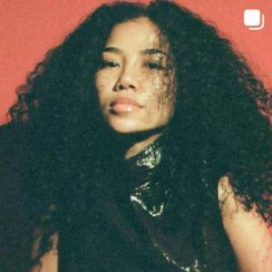

.ñ•î ›Å Àñ Home ‚ÇäÀö‚äπ·∞î‚ÇäÀö Faves ‚ÇäÀö‚äπ·∞î‚ÇäÀö Inspo .ñ•î ›Å Àñ
Click here for her
Instagram
and
Youtube

This artist is well known for her songwriting and singing. To me, she is an embodiment of the bond between me, my sister, my mom, and my best friend which are the most important relationships to me. Her music often employs instruments and sounds that are very angelic to me and the lyrics tend to have a deep meaning. I was honored to be able to attend her concert with my sister and feel her presence. She is inspiring because she beams radiant, light, warm, soft energy that you can feel when listening to her speak or sing. I aspire to affect others in a similar way.
Click here for her
Portfolio and
Youtube
This artist is well known for her illustration and animation. She inspires me as a driven and determined individual which is something I aspire to be, not only in my career but also in my personal endeavors. She gained attention for her chalk drawings she'd create on the sidewalks of the entrance of PIXAR studios consistently. Eventually, she was offered a position at the company which typically is a prestigious, competitive process, the story even made it to the news and on social media platforms. As a big fan of animation, storytelling, and PIXAR/Disney, I'd say this artist specifically inspires me the most.
Click here for her Instagram andYoutube
This artist is well known for her songwriting and singing, I first became a fan of hers when she was an actor in my favorite shows growing up. She became a central part of my childhood nostalgia and represented much more to me than just her art. Now I am mostly inspired by her character, the way she speaks genuinely and kindness whether it is regarding her family and friends, to the press, in interviews, etc. In big industries, sometimes artists lose this valuable sense of self and character and that is the main thing that I most admire about Selena.